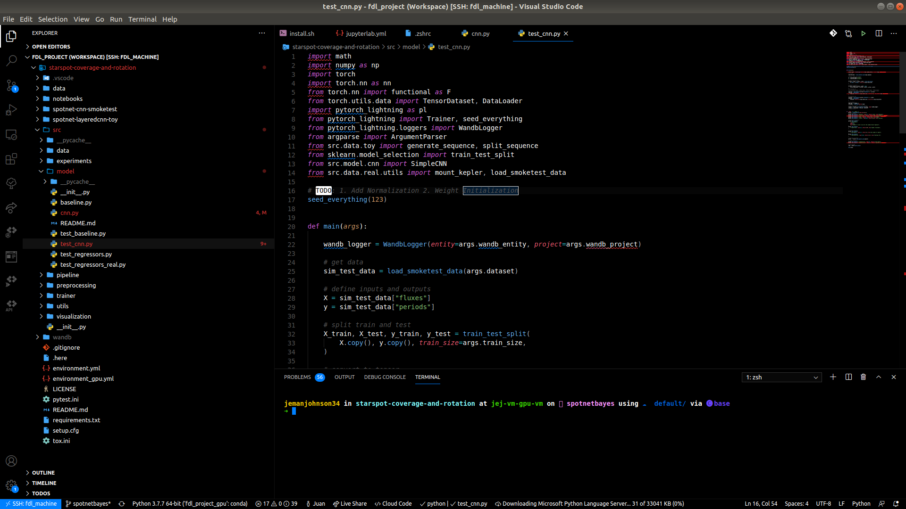
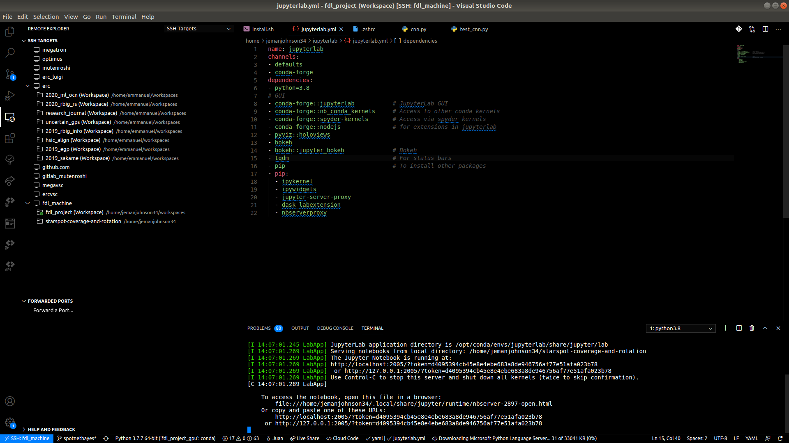
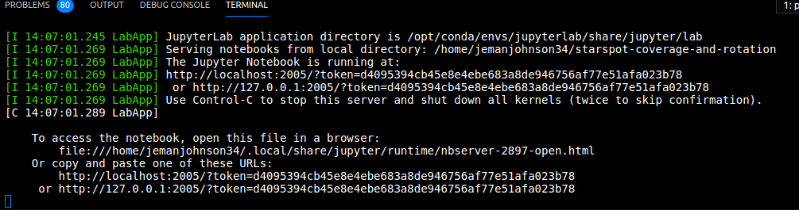
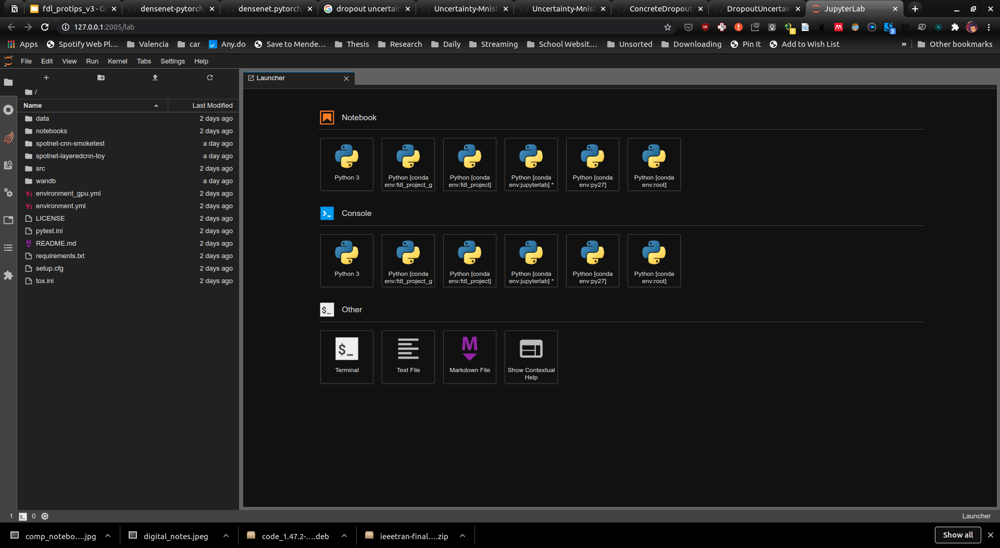
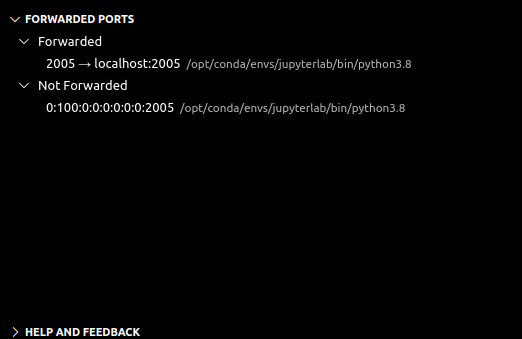

VSCode + JLab
Contents
VSCode + JLab#
So most people like to use a combination of a dedicated IDE as well as JupyterLab. If you don’t you probably should… But it’s a bit annoying when we need both. Some people try to use the built-in jupyter notebook support from VSCode. But it sucks. It’s not good enough and it’s quite slow compared to JupyterLab. Another thing people do is they use the Notebook Instances from the GCP webpage. This is convenient but the biggest problem with this is that it’s not in your home directory. So you have to play games with the directories which is a pain in the butt. In addition, the permissions are weird so some python code doesn’t play nice when you want to do execute commands using python (and sometimes the terminal - need sudo).
So this tutorial provides the following:
a simple way to open jupyterlab with your vscode ide
you don’t have to do the
ssh server -L xxxx:localhost:xxxxwith the extra portyou will be able to access all of your other conda environments using this jupyterlab
makes working with jupyterlab in conjunction with vscode a lot easier.
1. Connect VSCode to your VM#

2 Start your Jupyterlab Instance through VSCode terminal#
jupyter-lab --no-browser --port=2005 --ip=0.0.0.0
This should appear:

The most important thing is that this should appear.

Notice now that you have two links to use and you can click on them. Now you’re good! Your browser should open a JupyterLab notebook on it’s own!

What Happened?#
Well VSCode rocks and basically opened an ssh port through vscode itself. So now we can access it through our browser as if we did the ssh stuff ourselves.

3.1 Bonus - Automatic Function#
We can automate this to have a bit more flexibility on the port number. I added this function to my .profile (you can use .bashrc or .zshrc) and now I can just call this function whenever I need to open a JupyterLab using the VSCode terminal.
# JUPYTER NOTEBOOK STUFF
function jpt(){
# Fires-up a Jupyter notebook by supplying a specific port
conda activate jupyterlab
jupyter-lab --no-browser --port=$1
}
3.2 Bonus - Outside of VSCode#
One caveat is that you need to have VSCode open for your JupyterLab to run. So if you close it, it closed the JupyterLab session. One thing you could do is open another ssh port using the gcloud command.
# sign in and have a port open
gcloud compute ssh --project XXX --zone XXXX USER@VM-INSTANCE -- -L 2005:localhost:2005
# start jupyterlab
conda activate jupyterlab
jupyter-lab --no-browser --port 2005
In this tutorial, I will quickly be going over how one can open up a Jupyter Notebook in VSCode from one that has been activated on a slurm server through an interactive node.
1. Connect to the server via VSCode#

2. Connect to an interactive node#
Try to use something explicit like the following command:
srun --nodes=1 --ntasks-per-node=1 --cpus-per-task=28 --time 100:00:00 --exclude=nodo17 --job-name bash-jupyter --pty bash -i

3. Start a Jupyter Notebook#
conda activate jupyterlab
jupyter notebook --ip localhost --port 3001 --no-browser

4. Open Jupyter Notebook in VSCode#
At this point, something should pop up asking you if you would like to enter a token or your password for your notebook.